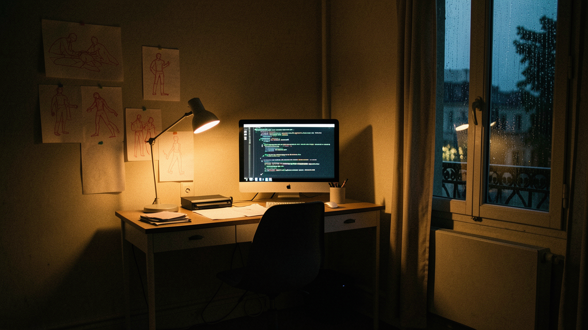
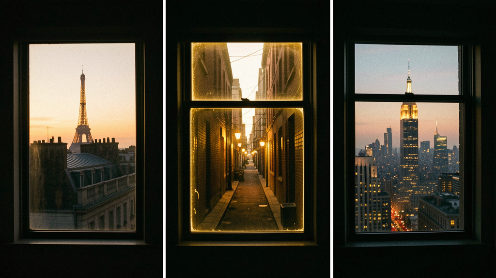

The studio began in a fifth-floor walk-up on Rue de Bretagne, above a boutique that smelled of leather and tungsten.
The space had no elevator, no heating worth mentioning, and a single window that looked out onto a courtyard the size of a postage stamp. Two people ran it then: Margot, who came from film, and Ren, who came from code. They had no clients, no template, and three weeks of severance between them.
They watched dailies in the morning, wrote loops in the afternoon, and argued about kerning at night. The apartment had paper taped to the walls — charcoal studies of light, wireframes in red ink, notes in three languages.
2014 — The work begins in shadow

07.2014 — First commission
A small fashion house asked for something minimal. Margot wanted film. Ren wanted motion. They compromised on stillness.
They built a site that never moved unless the user moved it. The client cried at the presentation. Not because it was emotional. Because it was quiet.
"The first time I understood that motion is not decoration — it is meaning."
2020 — Tokyo
The brief was ten words: "Make it feel like walking into a dark room and finding a match."
They moved Margot to Tokyo for three months. Ren stayed in Paris and wrote the WebGL layer. The site load time was eleven seconds. No one complained. Everyone waited.
The project won at Awwwards. The client called it "the first thing we ever made that felt like the brand." Margot and Ren later agreed they had not made the brand. They had made a space where the brand could breathe.

2021–2025 — Expansion
They added a third partner, Lien, who had spent a decade in product design at a company nobody remembers.
Lien arrived with two plants, one theory about color, and an intolerance for looseness. Tokyo formalized. New York followed — a residency in a loft in SoHo where the radiator hissed and the light was better. London stayed informal. They never opened an office there. They just went.
2026 — Today
They still answer emails themselves. They still review every frame. They still measure projects not by revenue but by how long people stare at them.
They believe that the best interface is the one you feel before you understand it. That motion is not decoration — it is meaning. That constraint is not limitation — it is language.
They still don’t pitch. They still don’t take meetings that start with "What’s your process?" They still eat soup when nothing else is available.
And the window in Paris — the one in the original walk-up — still exists. The building was renovated in 2023. The window was moved seven centimeters to the left. Margot still mentions it when she wants to prove that nothing stays the same, not even brick.
"This is not a success story. It is a practice story."